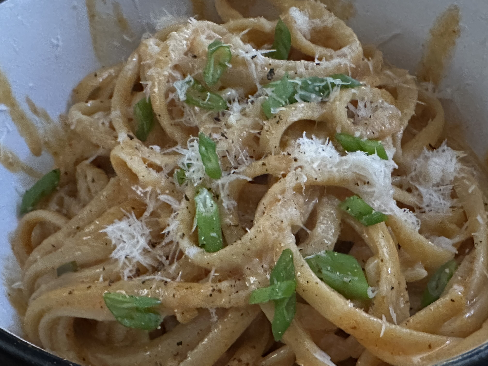

Gochujang Alfredo
Ingredients
- 5 garlic cloves
- 2-3 green onions
- 1 cup (50g) freshly grated Parmigiano-Reggiano cheese, plus more to serve
- Kosher salt, to season
- 16 oz pasta. Recommened types: pappardelle, fettuccini, linguine, penne, bow ties. You do you, though.
- 3 tbsp (42g) butter (if you're using salted butter, adjust salt added for seasoning appropriately)
- 5/4 cups heavy cream
- 1/4 cup reserved pasta water, plus more if needed (you probably don't, and 1/4 C seems likely to be too much)
- 1 tbsp gochujang
- 1/2 tbsp gochugaru (if you don't have gochujaru, substitute other ground chili peppers/chili pepper flakes)
- 1 tbsp oyster sauce
- Black pepper, to serve
Instructions
Prep
-
Finely chop the garlic cloves. Thinly slice the green onions, separating the whites and greens.
-
Grate about 1 cup (or 50 grams) of Parmigiano-Reggiano.
-
Combine all the seasonings (gochujang, gochugaru, oyster sauce) in a small container and mix well.
Cooking
-
Bring a pot of salted water to a boil. Add the pasta and cook according to the package instructions or until al dente. (Reserve at least 1/4 cup of the pasta cooking water).
-
While the pasta is cooking, add 3 tablespoons of butter to a large pan over medium-low. Once the butter is melted, add the garlic and white parts of the green onions. Saute for 2 minutes or until they start to pick up a little bit of color.
-
Add the gochujang mixture. Saute for 2 to 3 minutes. Add the heavy cream and stir. Gently simmer for another 2 to 3 minutes or until the sauce gets a little bit thicker.
-
Add 1 cup of freshly grated Parmigiano-Reggiano. Stir until everything is well combined.
-
Use tongs to take out the pasta and add it to the sauce. Add about 1/4 cup (60ml) of the reserved pasta water and mix well. (If the sauce gets too thick, you can add a little bit more pasta water.)
-
Turn the heat off. Taste and add some salt to taste. Divide the pasta into serving bowls. Top with a few shakes of black pepper, green onions, and Parmigiano-Reggiano.
Notes
I didn't have any gochugaru when I made this the first time, and substituting 1 tsp Aleppo pepper and 1tsp paprika was very tasty. I also used closer to 4tbsp of butter, just to finish off the stick.
The original recipe only calls for 6oz pasta, but that feels to me like way too little for the amount of sauce that gets made with this, and I did not come close to adding a full 1/4 C of pasta water.